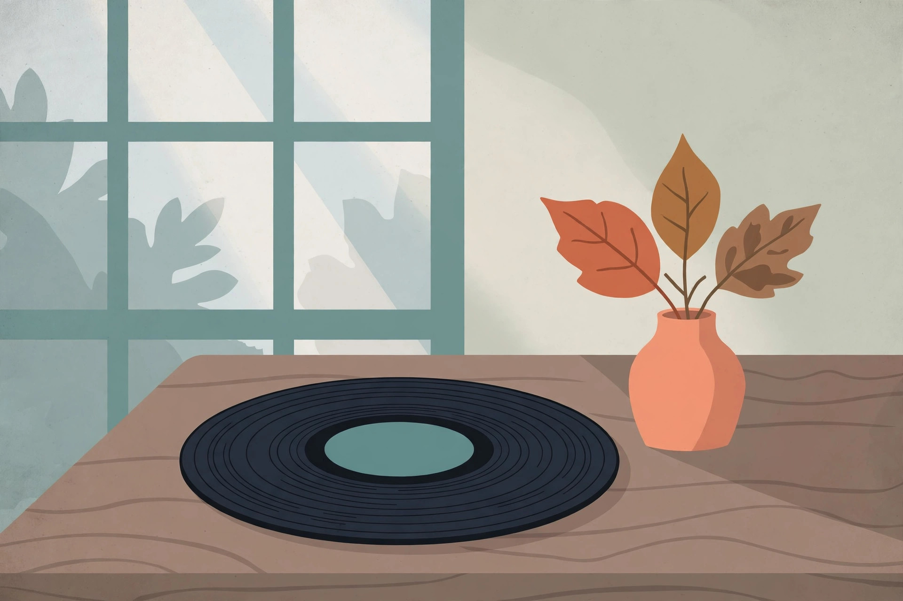
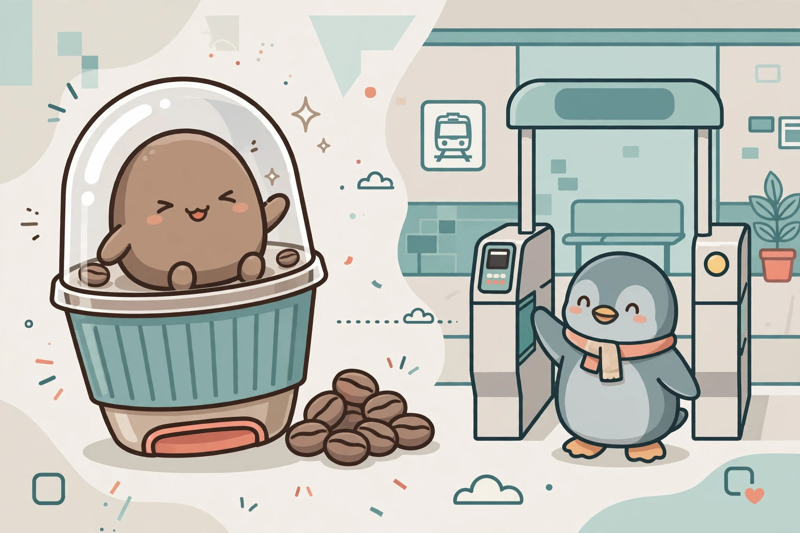
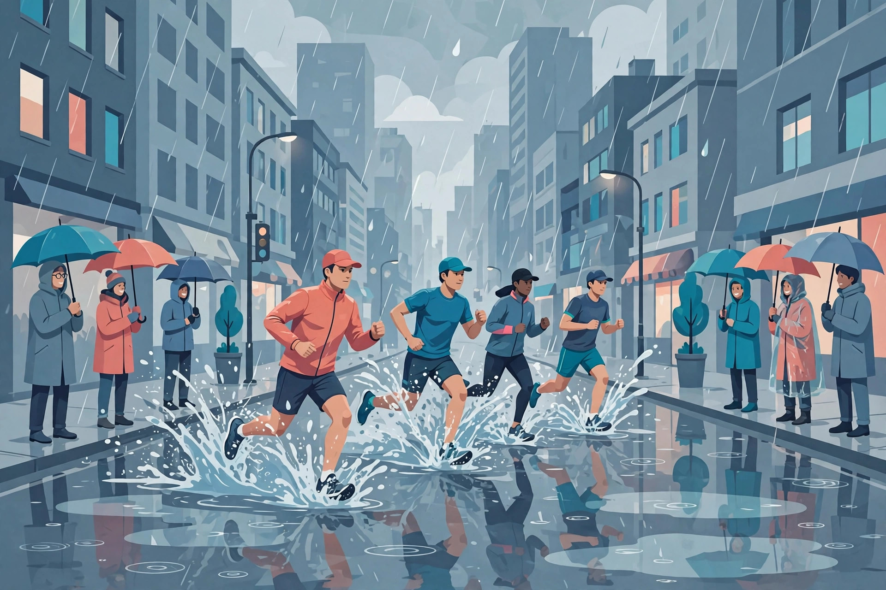
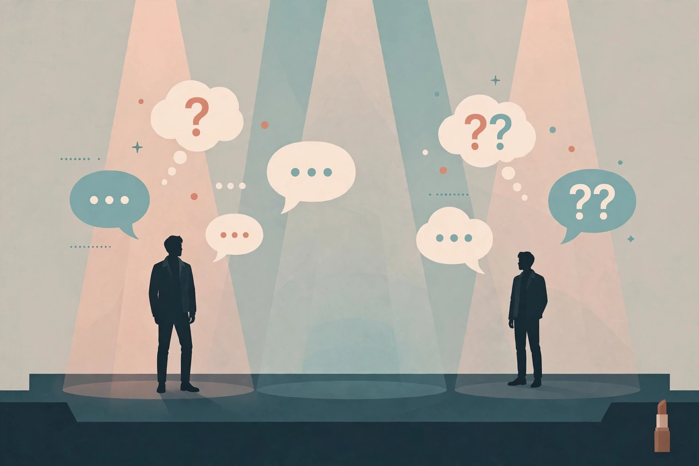

2026-11-24（火） ― 初回観測
トップトレンド：ハイヒールおじさん（1.7M posts）
示唆：ブレイズリーの事故では、追悼と並んで騎手への強い非難が出ているが、投稿の中では「意見と誹謗中傷は違う」という線引きの声も出ている。事故の原因究明の情報が早めに共有されると、非難の矛先が個人攻撃へ向かう前に、制度や安全対策の議論へ移りやすい。
この日の記事を読む →Instagram / Threads（読み取り専用、トレンド起点）の毎日観測を記事化したダッシュボード。話題・意見・論調・話している層の傾向と、トレンドからの示唆を記録する。
民間の地震予報への不安の声と、19日未明の実際の地震が結びつき、予報アプリの導入や備蓄の見直しへ広がった一連の流れ。
中国で話題の「ハイヒールおじさん」をチョコレートプラネット松尾駿と藤井隆が再現した動画から広がったミーム。比較動画、一般人のチャレンジ動画、元ネタの人物の背景説明へと段階を踏み、夜になっても新作が出続けてフィードを占拠している。
11月24日0時に発表された、山田涼介とSEVENTEENのJEONGHANのコラボ楽曲「Afterglow」（12月14日配信リリース）。解禁直後の広がりはInstagramのビジュアル共有が先行。
11月23日の福島1Rで起きた転倒事故で2歳馬ブレイズリーが死亡。古川奈穂騎手への騎乗停止処分と、騎手への非難と誹謗中傷の線引きをめぐる議論。
『ドラム―VIVANT THE ORIGIN STORY―』の地上波初放送（11月22日21:00、TBS）を起点に、放送直前の素朴な反応から放送後の正体をめぐる考察、再視聴の声へと論点が移った流れ。
肌への刺激を理由にヒートテックからグンゼの綿100%防寒インナーへ乗り換える動き。8月下旬のバズ投稿が土台になり、11月23日夜にトレンド化した。
新型フリードの発売に合わせ、Mrs. GREEN APPLEのCM出演と、試乗でオリジナルステッカー・成約でライブ招待抽選という「推し活を来店・成約の動機にする」フェアが始まった事例。
ファンケルがいい夫婦の日の11:22に公開した大森元貴×浜辺美波のレトロな家族写真風ビジュアル。「12/14公開 #FANCL」という予告付きで、12月14日の公開内容が謎解きの対象になっている。
スタバ初のカプセルトイが、発売初日から「買えない→ダブる→交換する」の型を1日に圧縮し、2日目も開封・交換の実況が続いた事例。
しゃぶ葉の麻辣湯フェアが11月19日に始まり、初日から大混雑とお得情報の共有が広がった事例。
Qoo10の年末メガ割（11月20日〜12月2日）をめぐる、セール前の期待と開始日の買い物リスト化、ブランド同士の比較の流れ。
GUとちいかわのコラボ第1弾の発売日に、整理券・時間指定入場という「並ぶ仕組み」そのものが話題になり、争奪戦の体験がコンテンツ化した事例。第2弾は11月27日。
国内金価格が1gあたり2万円割れに接近し、銀やプラチナも大幅下落した2026年11月20日の急落をめぐる、投資家の失望の語りと買取店の実務の呼びかけ。
市川市動植物園のニホンザルの子ザル。飼育員の肩に甘える姿などで再びトレンド化。
Amazonのブラックフライデー2026。日程発表でトレンド化し、セール前の狙い目共有が始まる。
セザンヌのプチプラリップのバズが、フルメイクの色系統へ拡大し、やがて検証・冷静化へ移った一連の流れ。
バンダイのブラインド食玩が、発売日から3日間で「買えない→ダブる→交換する」とフェーズを進めた事例。
「触感を言葉と音で伝える」コンテンツの定着から、安全性の議論、他ジャンルへの波及まで。
公的キャンペーンへの著名人・インフルエンサー起用が、起用のたびに妥当性を問われる構図。
Netflixの恋愛リアリティ番組がトレンドに継続して登場し、口コミ経由で新規視聴を取り込み続けている。
示唆：ブレイズリーの事故では、追悼と並んで騎手への強い非難が出ているが、投稿の中では「意見と誹謗中傷は違う」という線引きの声も出ている。事故の原因究明の情報が早めに共有されると、非難の矛先が個人攻撃へ向かう前に、制度や安全対策の議論へ移りやすい。
この日の記事を読む →
示唆：ラパルフェのものまねは、M-1の準々決勝という場で「推し」を題材にすることで、お笑い関心層とアイドルのファン層の両方に届いている。題材の推しが持つファン層に届くかどうかが、ものまねの拡散の広がりを決める要素になっている。ものまねの題材選びが、異なるコミュニティの交差点になる型。
この日の記事を読む →
示唆：大火球の目撃は「他にも見た？」という確認の連鎖で広がり、天体写真家や科学館の映像が答え合わせの役割を果たす。偶然の自然現象でも、目撃の共有と専門的な記録が組み合わさると、その夜だけの小さなコミュニティが生まれる。
この日の記事を読む →
示唆：代打の急きょ追加披露は「対応力」として称賛を集めるが、同時に歌詞やファンの振る舞いへの反感も可視化される。注目の集まる場面では、称賛と批判が同じタイミングで拡散し、本人への評価とファンの振る舞いへの評価が分けられて語られる。
この日の記事を読む →示唆：企業の情報流出では、流出の規模より「パスワードが暗号化されていなかった」という事実が驚きと不信を呼ぶ。拡散の中心は「使い回しパスワードを変える」という実務の注意喚起で、対象期間と対処法を一枚で示す公式の発信が、不安の拡散を抑える接点になる。
この日の記事を読む →
示唆：追悼の拡散は「思い出の曲を聴く」という静かな行動共有が中心で、訃報の扱いでは派手な企画より、ファンが自分の記憶を語れる余白が大事になる。
この日の記事を読む →
示唆：スタバのカプセルトイは、サンリオ食玩の3日間のフェーズ（買えない→ダブる→交換する）が発売当日に圧縮されて起きている。ブラインド商品の「揃わなさ」は今や発売初日から交換募集を生む前提になっており、交換の場や再入荷情報を早めに示すことが、買い逃した層の熱を維持する接点になる。
この日の記事を読む →
示唆：サンリオ食玩は「買えない」から「ダブる・交換する」へフェーズが移った。ブラインド商品の不満は「買えない」から「揃わない」へ形を変えながら続き、交換募集というユーザー同士の解決が自然発生している。交換の場やダブり救済の仕組みを示すことが、コレクターの熱を維持する接点になる。
この日の記事を読む →
示唆：サンリオ食玩は発売日当日に「買えない・揃わない」実況がトレンド化しており、ブラインド商品の「揃わなさ」は開封の楽しさと同時に不満の種でもある。入荷情報や交換の場を早めに示すことが、「買えない」体験を「探す楽しみ」に変える接点になりやすい。
この日の記事を読む →
示唆：烏龍茶リップは「バズ→購買→色番の迷い」という購買ファネルの摩擦が可視化されている。色番選びのガイドが「迷い」を解消する接点になり、まとめアカウントやブランドの次の一手になりやすい。
この日の記事を読む →
示唆：烏龍茶リップは「色の名前」から「メイク全体の色系統」へ広がり、飲み物喩えの言語化とデパコス比較が拡散の型になっている。色名や喩えに“語れる余白”があると、ユーザーが自発的に検証・布教する。
この日の記事を読む →
示唆：Threadsの「いいねスタンプ」は、プラットフォーム側の小さな仕掛けが「試してみる」連鎖を生み、推し活（りんご＝Mrs. GREEN APPLE）と結びついて拡散する例。仕掛けは「自分のものにできる」余白があると広がりやすい。
この日の記事を読む →話している層の傾向は、プロフィールや投稿から読み取れる印象であり統計ではない。